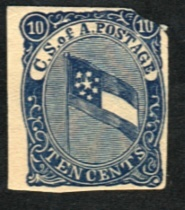
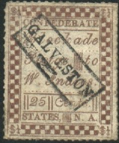
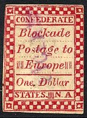
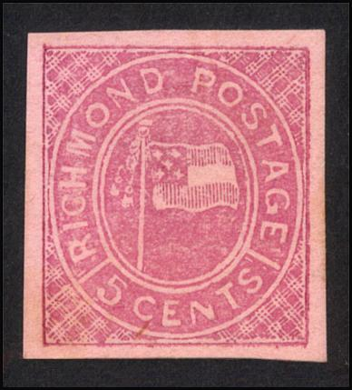
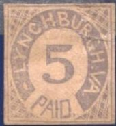
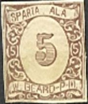
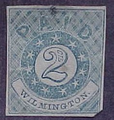
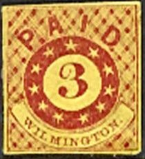
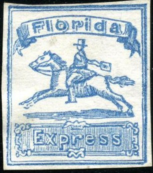
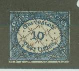

Genuine Hoyer and Ludwig essay
Return To Catalogue - Confederate States general issues - United States
Note: on my website many of the
pictures can not be seen! They are of course present in the
catalogue;
contact me if you want to purchase it.
There exist some bogus issues of the Confederate States. For example the Confederate Blockage issue that exists in many values.
Genuine Hoyer and Ludwig essay

A genuine essay was prepared by the firm Hoyer and Ludwig, but was never used. The genuine essay has vertical and horizontal lines behind the flag. I've seen two forgery types, both with horizontal lines only as a background to the flag. The first forgery type has the lines in the flag following it, while in the second type forgery, the lines are diagonally with respect to the flag. The big star in the flag is also different. Both forgery types exist in several colors. Album Weeds already lists these forgeries.

Note that this type has "Postge." and usually a boxed
"GALVESTON", a boxed "SAVANNAH", a boxed
"CHARLESTON" or a circular "MOBILE" cancel

Apparently a modern product based on a Taylor forgery according
to http://www.rfrajola.com/csa/blockade/blockade.htm
These stamps are phantasy products. They first appeared in 1864. There are many different kinds of these labels, including perforated ones (though I have not seen them personally). Originally thought to be a product made by the forger Upham, it is now considered unclear who 'invented' this issue. The forger S.Allan Taylor also made a set. More information, including the different types and values can be found on Richard Frajola's website: http://www.rfrajola.com/csa/blockade/blockade.htm.
"Columbia P.O. Five Cents Postage Paid", the blue stamp
has the same black overprint as one of the Galveston bogus
stamps.
I have also seen a 5 c black on green in the above design.
(Richmond City-Post bogus, crossed canons with canon balls)
In this above shown "RICHMOND CITY-POST" design, I have seen the colours: red on blue, red, brown, black, blue and blue on red. No value is indicated on any of these stamps.

Richmond Postage, flag, exists in many colors. There are at least
3 different types, note the shape of the letters, the flag and
the background pattern.


Statesville N.C Prepaid bogus issue, I have also seen this stamp
in blue. These bogus stamps were probably issued by the forger Taylor.
Inscription 'RICHMOND BUCKS EXPRESS PAID CONFEDERATE STATES ONLY':
(Bucks Richmond Express, Confederate states only)
I have also seen a 1 c black and a 5 c red in the above design. They are mentionned in Album Weeds to be a bogus issue. In my 'Standard guide to postage stamp collecting' by Bellars and Davie (issued in 1864 in London), the values 1 c slate-brown, 2 c rose, 5 c brown, 10 c blue, 15 c green and 20 c vermilion are mentioned. The Richmond issue was considered as genuine in this catalogue (and mentioned together with the Baton Rouge, Memphis, Mobile, Nahsville and New Orleans issues). More information on this issue can be found on Richard Frajola's website: http://www.rfrajola.com/csa/bucks/bucks.htm, where he describes 8(!) different types of these stamps.
C.S. Postage Selma ALA.P.O. 5 c red, I have also seen 5 c violet,
5 c blue, 5 c red on yellow and 5 c red on lilac.
(Wilmington, reduced size)
 
(Wilmington bogus issue, I have been told these stamps were made
by the forger Taylor)
Much more information about the Wilmington stamps can be found at http://www.rfrajola.com/csa/wilmington/wilmington.htm, it seems that there are many different types and values of this forgery.
'PAID F.BRADLEY PM' (no townname indicated, picture obtained from
Frajola's website)
For more information see the site of Richard Frajola: http://www.rfrajola.com/csa/memphis/bradley.htm, only one type of this stamp seems to exist from F.Bradley.
'Florida Express' (horse), picture obtained from Frajola's
website

Florida Express bogus stamp, different type; possibly made by the
forger Taylor.
There are 6 different types of the Florida Express stamps, differing in the shape of the ground beneath the horse and the shape of the leg of the messenger. See for more information Richard Frajola's website: http://www.rfrajola.com/csa/florida/florida.htm.
'Post Office Houston Tex., 20 cts.' and 'WELDON P.O. Five
Cents.', I've also seen 'GREENVILLE ALA. TWO CENTS' in a similar
design in many colors. The Houston stamp was illustrated in the
'Novelties, discoveries and resuscitations' section of the
Philatelic Record 1883, Vol V. No 49, page 4.
'Galveston Post Office'

Savannah bogus stamp; 10 c orange, I've also seen a different
type with stars around the outer border instead of a wavy line
(10 c black on green, 10 c black on lilac, 10 c blue, 10 c red on
blue and 10 c red on grey).
"PAID RH CLASS PM"
Other bogus issues are: 'PAID EH LAKE' (no townname indicated), 'Madison Fla Paid', 'Montgomery PO PAID T.WELCH P.M.', 'St.Elmo Tenn.' and 'Vicksburg'. More information can be found on the website: http://www.rfrajola.com/csa/boguscsaindex.htm.
{kind=link}
{kind=link}
{kind=link}
{kind=link}
{kind=link}